Культура и искусство
Поддержка детских и молодёжных проектов, творческих замыслов и начинающих авторов.
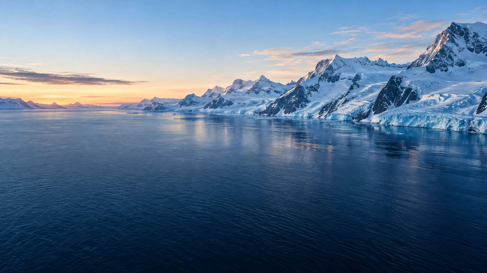
Фонд поддержки и развития творческой молодежи «Арктика молодая»
Помогаем детям и молодёжи раскрыть себя.
Объединяем культуру, творчество и любовь к Арктике.
01 / О фонде
Культура начинается с человекаМы верим, что талант заслуживает поддержки — независимо от того, где начинается его путь.
«Арктика молодая» — фонд поддержки и развития творческой молодёжи. Наша цель — выявлять и поддерживать талантливых детей и молодых людей, помогать их культурному и творческому развитию.
Через искусство, кинообразование и просвещение мы обращаемся к культуре Арктики, самобытности, языкам и традициям народов России.
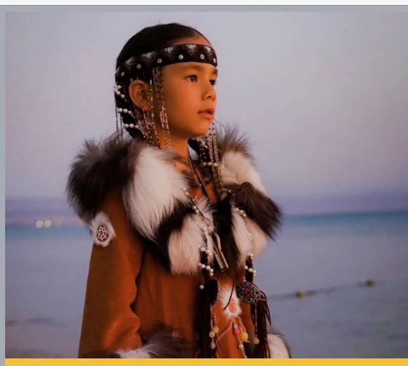
В том числе для детей-сирот и детей, оставшихся без попечения родителей.
02 / Деятельность
От интереса — к творчествуСоздаём пространство для творческого развития, знакомства с культурой и обмена идеями.
Наши цели в уставеПоддержка детских и молодёжных проектов, творческих замыслов и начинающих авторов.
Знакомство с языком кино и развитие творческого интереса к кинематографу.
Мастер-классы для школьников и студентов, творческие мастерские и лаборатории.
Информационная поддержка творческой молодёжи и проектов фонда.
Сохранение и защита самобытности, культуры, языков и традиций народов России и стран БРИКС+
Мастер-классы для школьников и студенческой молодёжи
Творческие мастерские, лаборатории и фестивали, в том числе кинофестивали
Научные конференции по арктической тематике
03 / Проекты фонда
Идеи, которые объединяютКино, культура и образование —
четыре проекта с общим вдохновением.
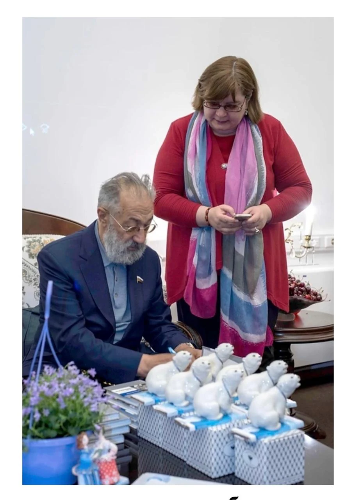
01 / КИНОФЕСТИВАЛЬ МолодаяМеждународный молодёжный кинофестиваль
Кинематограф как язык творчества и знакомства с Арктикой. Фестивальный проект фонда для молодых талантов.
Узнать об участииВсероссийский кинопроект
Север в кадре: природа, культура и люди Арктики. Проект, посвящённый знакомству с регионом через кино.
Обсудить проект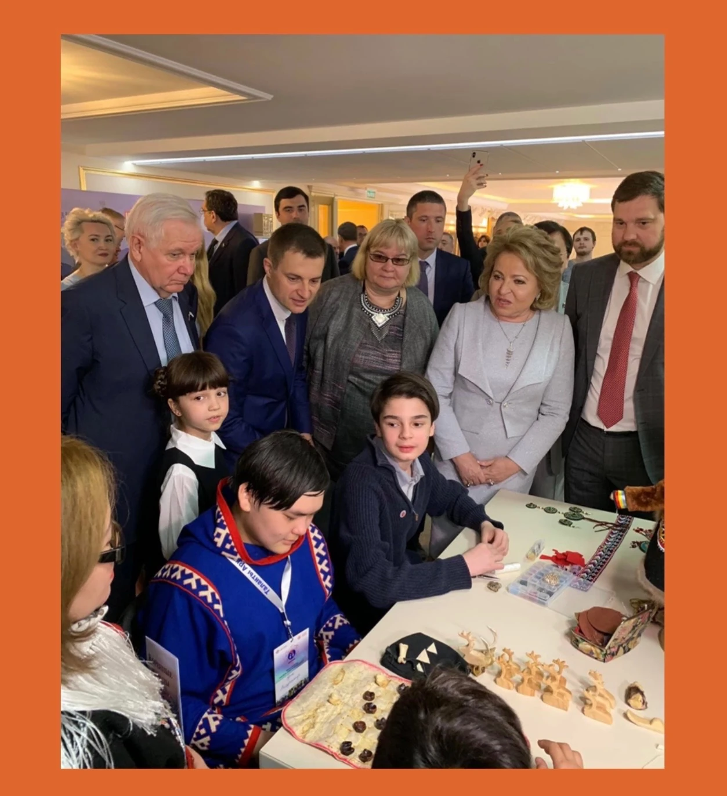
03 / КУЛЬТУРА И ОБРАЗОВАНИЕ БудущееКультурно-образовательный проект
В центре проекта — дети, их творческий потенциал и культура Арктики. Возможность познакомить широкую аудиторию с талантами Севера.
Узнать о проекте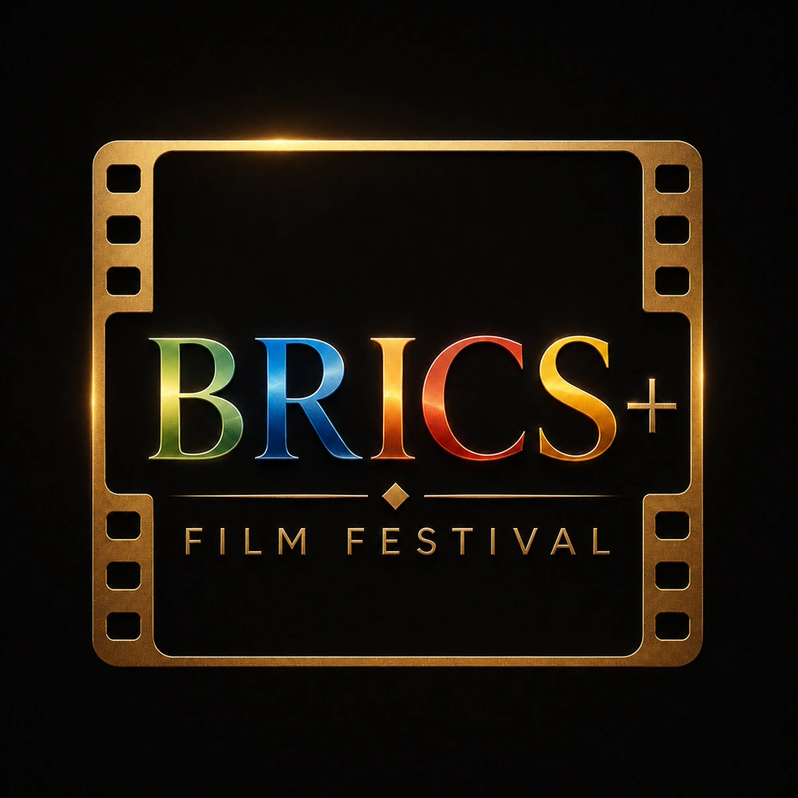
Международный кинофестиваль
Кино как пространство культурного диалога. Международный фестивальный проект фонда, объединяющий интерес к искусству и сотрудничеству.
Официальный сайт фестиваляЕсть идея для совместного проекта?
Давайте обсудим04 / Люди фонда
Поддержка, с которой всё начинается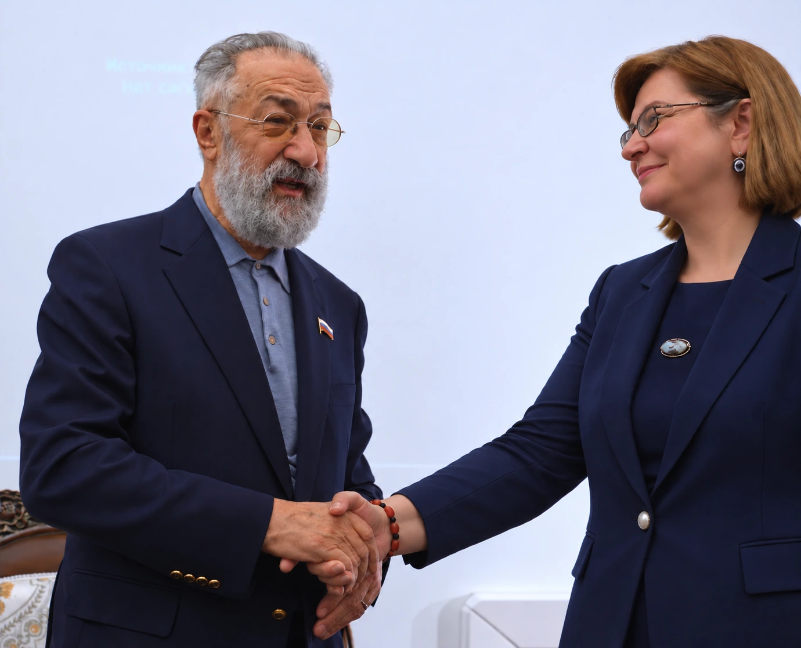
Руководитель фонда
Фонд «Арктика молодая» создан при поддержке Артура Николаевича Чилингарова.
Виктория Борисовна — член Союза журналистов РФ, член Союза кинематографистов РФ, член Ассамблеи Народов Мира и Ассоциации кинообразования и медиапедагогики РФ.
05 / Команда
Общее дело — разные профессиональные взглядыКинообразование, наука
и международные культурные проекты
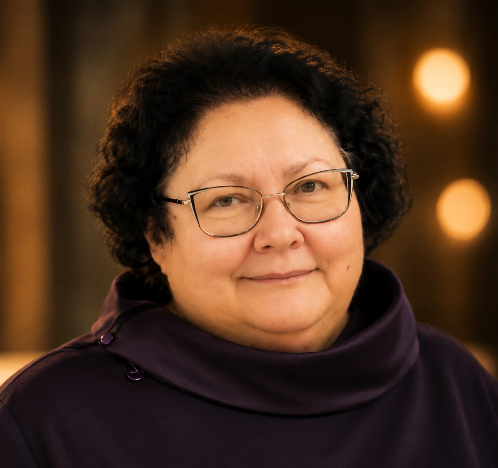
Директор кинообразовательных проектов фонда
Президент Ассоциации кинообразования и медиапедагогики Российской Федерации. Член Союза кинематографистов России. Заместитель председателя комиссии «Кинопедагогика и медиаобразование». Доцент ВГИК имени С. А. Герасимова.
Член правления фонда, директор научно-просветительских проектов фонда
Заместитель сопредседателя международного экспертного совета при ОДКБ.
Заместитель генерального директора фонда
Продюсер международных культурных и кинематографических проектов.
06 / Фотогалерея
Моменты, которые остаютсяВстречи, презентации и культура Севера —
в фотографиях из архива фонда.
Фестивальные встречи, выступления и участники проектов
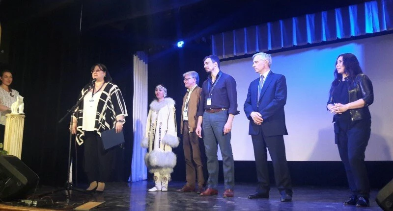
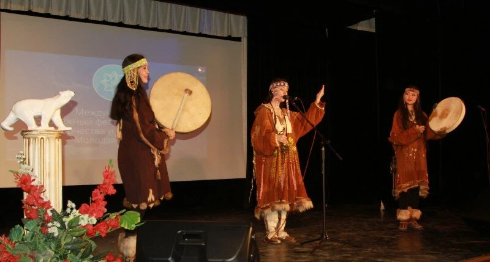
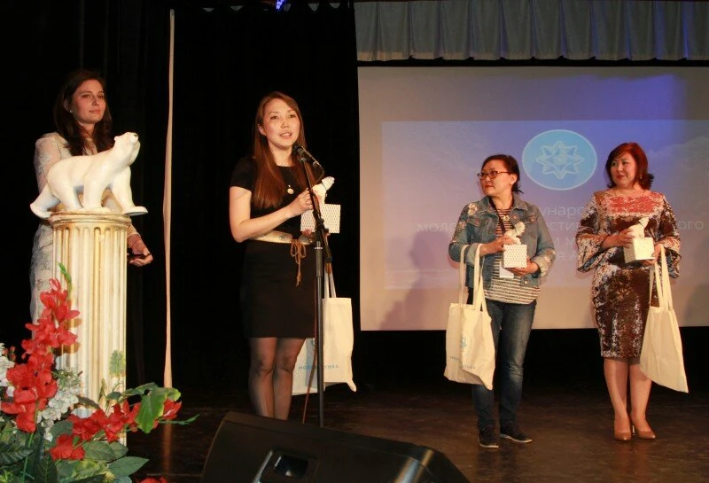
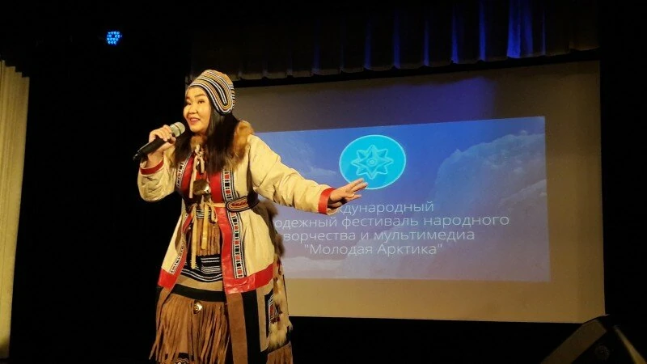
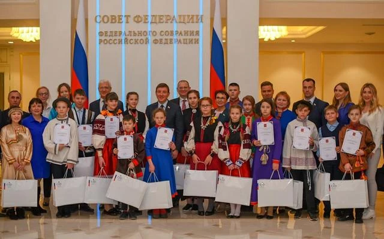
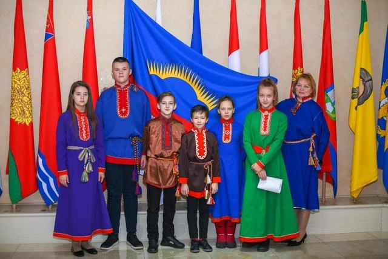
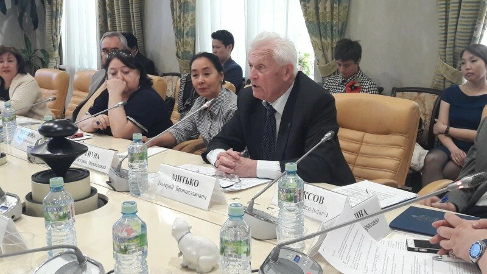
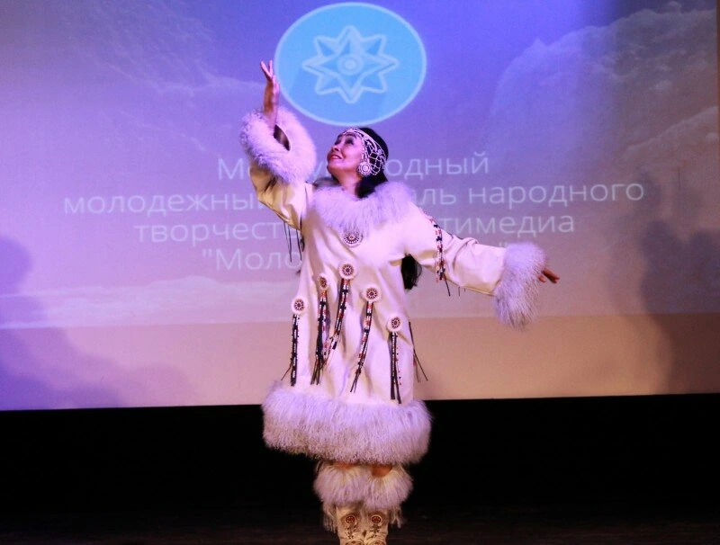
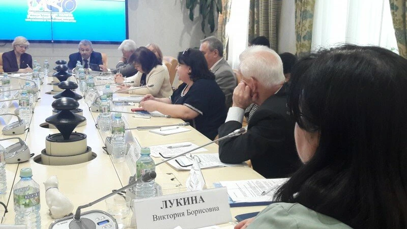
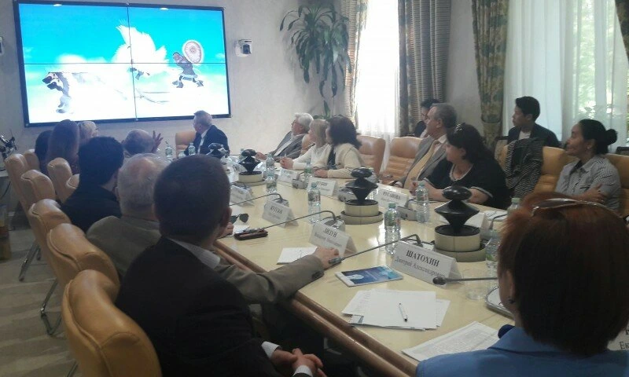
Нажмите на фотографию, чтобы открыть её в полном размере.
07 / Открытость
Информация в открытом доступеУстав и регистрационные документы фонда. Каждый файл доступен для просмотра и скачивания.
Свидетельство Ассамблеи Народов Мира и сертификат Ассоциации кинообразования выданы руководителю фонда — Виктории Борисовне Лукиной.
6 файлов
Государственная регистрация некоммерческой организации
PDF · 1 страница · 898 КБСвидетельство о членстве В. Б. Лукиной · № 01-0000114
PDF · 1 страница · 4,8 МБСертификат действительного члена В. Б. Лукиной · № 135
PNG · 2,3 МБДокумент не найден. Попробуйте другое название или категорию.
Открыть · Скачать
08 / Контакты
Начнём с разговораСотрудничество, участие в проектах или новая идея —
напишите нам, чтобы обсудить следующий шаг.
Лукина Виктория Борисовна
Фонд поддержки и развития творческой молодежи «Арктика молодая»
По регистрационным документам фонда.